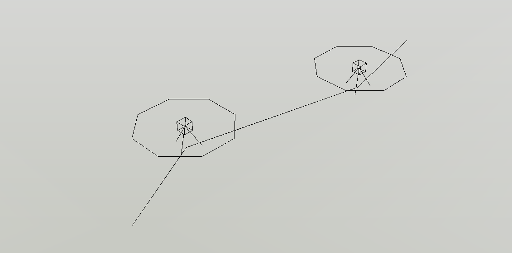

解决方案
在每隔50 m的标高点上架设三脚架和相机，绕水平一周拍摄多张图片，并且要求相邻图片之间有重叠。
将标高点的信息，即点号、坐标等记录在表格里。
对每个测站拍摄到的多张图片用Microsoft ICE软件拼接成一张环景图。
每个站点的点号、坐标及对应的环景图作为一条记录输入到数据库中。
| 点号 | X | Y | H | 环景图 |
| A | 5000.000 | 3000.000 | 3.500 | "C:\Users\ZXC\Pictures\A.jpg" |
| B | 5025.000 | 3040.000 | 3.610 | "C:\Users\ZXC\Pictures\B.jpg" |
运用.NET Framework制作WinForm桌面应用，实现以下功能：
(1) 连接到数据库，读取每个站点的点号和坐标，并将站点以图形形式展现到应用上；
(2) 由用户选定站点，应用程序从数据库中读取对应的记录，把此站点的环景图读取出来；
(3) 默认显示环景图正中心附近的图像，用户可以做水平旋转和垂直旋转，浏览其他方位的图像。
(1) 全景图的投影模型；
(2) 在全景图中识别出邻近站点的方位。